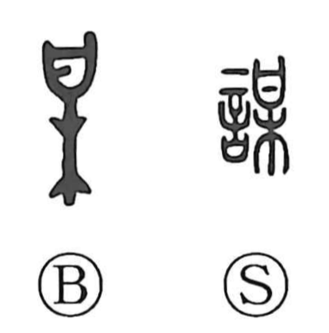

謀

Uncategorized
Kun: hakaru, hakarigoto, tabakaru | On: bou, mu
to plot ・ to plan ・ scheme ・ to consult ・ to deceive
Explanation
A phono-semantic compound with 言 “words” and the phonetic 某. In its original form, 某 combines a sign shaped like 日—here not the sun, but the image of a ritual receptacle holding a written prayer—with 木, a twig, evoking the act of attaching that prayer slip to a branch and offering it to the gods to seek their will. Built on this base, 謀 names words uttered in such seeking or intending: first the consultation of divine counsel, then more broadly planning and scheming, and by extension even deception. The compound 咨謀 preserves this early nuance of inquiry to the gods; 咨 itself means to intone a prayer or lament, and as a verb signifies consulting the deities.